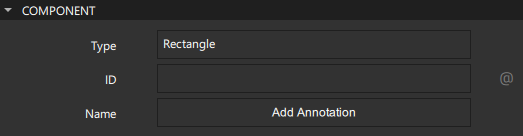

Concepts and Terms
This topic describes main Qt Design Studio concepts and terms:
Asset
An asset is an image, font file, 3D model, or other supported file that you add to your project.
Assets are packaged with components for delivery to users.
Read more about assets:
Binding
A binding is a declarative way of specifying the value of a property. Binding allows a property value to be expressed as a JavaScript expression that defines the value relative to other property values or data accessible in the application. The property value is automatically updated if the other properties or data values change.
At its simplest, a binding may be a reference to another property. For example, the height of a component can be bound to the height of its parent, so that when the parent height changes, the component height is adjusted automatically. Similarly, the opacity of a component can be bound to the opacity of its parent component.
Property bindings are created implicitly whenever a property is assigned a JavaScript expression.
Read more about bindings:
Component
A component is a reusable building block for a UI.
Qt Design Studio comes with preset components that you can use in your UI by creating instances of them. These are similar to Symbols in Sketch or Prefab in Unity.
Some of the preset components represent simple shapes, text, or images, while others represent complex UI controls with full functionality, such as spin boxes or sliders. You can also add instances of preset 3D components to your UIs. You can find all the preset components in Components.
To build your own components, you can modify the properties of the component instances and combine them.
A component is specified within one file (with the file extension ui.qml or .qml). For example, a Button component may be defined in Button.ui.qml. Typically, the visual appearance of a component is defined in a UI file. To create component files, you can use wizard templates, or move component instances into separate component files.
Read more about components:
Connection
A connection can be created between a component and signal to determine how the UI should react to application events. Another way to create connections between components is to create bindings between the values of their properties.
Read more about connections:
Device
An embedded device.
Read more about devices:
Mode
A mode adapts the Qt Design Studio UI to the different UI design tasks at hand. Each mode has its own view that shows only the information required for performing a particular task, and provides only the most relevant features and functions related to it. As a result, the majority of the Qt Design Studio window area is always dedicated to the actual task.
For a designer, the most important modes are Design for the actual work, Welcome for opening examples and tutorials, and Help for reading documentation. The other modes are mostly needed for application development.
The mode selector is hidden by default.
To show the mode selector, go to Views > Mode Selector Style and select Icons and Text or Icons Only.
Project
A project is a container for the components and assets that you use in your UI. You can package the UI and preview or run it on different operating systems on the desktop or a device.
You use templates to create different types of projects according to your needs. The templates add preset components to the project by default. For example, if you create a 3D project, preset 3D components are added to it. You can add more preset components in Components.
Read more about projects:
Property
A property is an attribute of a component that can be assigned a static value or bound to a dynamic expression. A property's value can be read by other components. Generally, it can also be modified by another component, unless a particular component type has explicitly disallowed this for a specific property.

Read more about properties:
- Properties
- Preset Components
- Specifying Component Properties
- Adding Bindings Between Properties
- Specifying Custom Properties
Signal
A signal represents an application event, such as a user clicking a button or the value of a property of a component changing. The application needs this information to perform actions or to relay it to other applications.
Components have predefined signals that are emitted when users interact with the application. For example, the Mouse Area component has a clicked signal that is emitted whenever the mouse is clicked within the area. Since the signal name is clicked, the signal handler for receiving this signal is named onClicked. Then it performs the defined Action.

Further, a signal is automatically emitted when the value of a property changes.
Read more about signals:
State
The state of a particular visual component is the set of information that describes how and where the individual parts of the component are displayed within it, and all the data associated with that state. Most visual components in a UI will have a limited number of states, each with well-defined properties.
For example, an element in a list may be either selected or not, and if selected, it may either be the currently active single selection or it may be part of a selection group. Each of those states may have certain associated visual appearance (neutral highlighted, expanded, and so forth).
Similarly, the appearance of a button can change to indicate a pressed state.

Read more about states:
Transition
When a visual component transitions from one state to another, its appearance changes. A transition is an edge between two states. It may trigger other events to occur, as other parts of the application may have behavior that is triggered when a certain state is entered or left.
Read more about transitions: